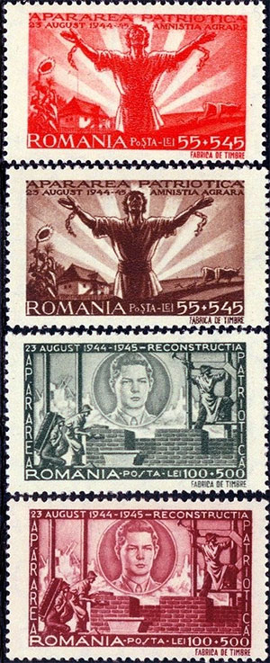
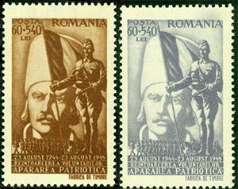
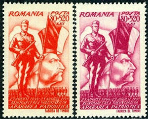
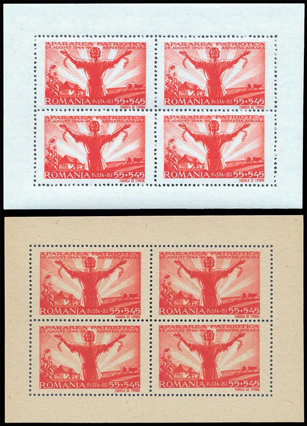

ISTORIA PE MĂRCILE POŞTALE ROMÂNEŞTI
SERIA DIN 1945 „APĂRAREA PATRIOTICĂ”
Victor Manta, PWO
Emisiunea „Apărarea patriotică” a fost emisă de administraţia poştală din România în 25 august 1945. Ea comemora prima aniversare de la crearea miliţiilor comuniste "Apărarea patriotică".
Evenimentele premergătoare ale armistitiului
Al Doilea Război Mondial începe pe 1 septembrie, dupa atacarea de Germania nazistă a Poloniei, iar apoi pe 15 septembrie a aceleiaşi ţări de URSS (conform cu anexa secretă la Pactulul Molotov – Ribbentrop, semnat pe 23 august 1939). După o perioadă de neutralitate de mai bine de un an, România își schimbă alianțele odată cu sosirea la putere a lui Ion Antonescu. Se aliază cu Puterile Axei în octombrie 1940 și intră în război de partea acestora în iunie 1941, în scopul declarat de a recupera teritoriile luate de URSS în urma unui ultimatum: Basarabia, Bucovina de Nord și Ținutul Herței.
După trei ani și două luni de campanii militare împotriva URSS, care duc armata română până în stepa din nordul Caucazului și la înfrângerea de la Stalingrad (unde nu avea ce căuta), la data de 23 august 1944, armata sovietică fiind deja în Moldova de nord încă din luna martie, Regele Mihai I își dă acordul pentru înlăturarea prin forță a mareșalului Antonescu dacă acesta va refuza semnarea armistițiului cu Națiunile Unite.
În urma refuzului net al lui Antonescu, Regele Mihai l-a destituit l-a arestat, iar România a trecut de partea Aliaților. Participarea României la cel de-al Doilea Război Mondial s-a caracterizat, așadar, prin două campanii: cea din est pentru eliberarea Basarabiei și Bucovinei (plus cucerirea de alte teritorii), pierdută, și cea din vest, care i-a adus reintegrarea Transilvaniei. Sursa.

Caracteristici ale seriei Apărarea Patriotică, Michel 885 – 896, Scott B292-B303.
Ea a fost emisă în blocuri de patru şi, ca o caracteristică neobişnuită, atât pe hârtie albă, cât şi pe una gri, negumată. Nu cunosc motivul acestei ciudăţenii, dar îmi pot imagina că după penuria de după război existau probleme de aprovizionare cu hârtie. În plus, existenţa celor două varietăţi făcea să crească vânzările, filateliştii fiind cunoscuţi că doresc să intre în posesia a tot ce a fost emis. Dorinţa de exploatare a filateliştilor se vede şi din valorile faciale ale mărcilor acestei serii de binefacere. Astfel primul timbru are o valoare de 20 lei + 580 lei, deci o suprataxă enormă de aproape 3000 %. Exploatarea se vede şi din faptul că pentru acelaşi subiect apar câte două mărci identice, dar în culori diferite. Emiterea în unităţi de patru timbre, şi nu în coli, este un alt semn al dorinţei de exploatare a unor oameni proaspăt ieşiţi dintr-un război pustiitor.
Câteva cuvinte despre organizaţia „Apărarea Patriotică”
Ideea formațiunilor Gărzilor Patriotice este de sorginte sovietică. Primele grupuri de muncitori comuniști înarmați datează din vara anului 1944. Dezvoltând nucleul muncitorilor care l-au preluat pe mareșalul Ion Antonescu după arestarea sa din ziua de 23 august 1944, P.C.d.R. (denumirea de atunci a micului partid comunist din România) a decis înființarea, în septembrie 1944, a Gărzilor de Apărare Patriotică. Pregătirea și organizarea acestor formațiuni s-a făcut sub supravegherea serviciilor de securitate sovietice NKGB. Printre membrii Gărzilor se aflau și deținuți de drept comun sau foști legionari „convertiți” la colaborarea cu comuniştii. De câte ori era necesar, Gărzile de Apărare Patriotică primeau sprijin logistic și de la Comandamentul Sovietic.
Gărzile de Apărare Patriotică erau utilizate de comuniști și ca grupuri de bătăuși care aveau rolul să împrăștie manifestările organizate de partidele democrate și să-i terorizeze pe membrii acestora. Marea manifestație organizată la București, în 8 noiembrie 1945, de către sprijinitorii democrației, monarhiei și ai Regelui Mihai, a fost împrăștiată de comuniști cu ajutorul camioanelor cu muncitori, printre care se aflau și membri ai Gărzilor de Apărare Patriotică, înarmați cu bâte și alte obiecte contondente.
La 15 ianuarie 1945, prim-ministrul de atunci (ne-comunist), generalul Rădescu, a ordonat dizolvarea Gărzilor de Apărare Patriotică, însă liderii comunişti Teohari Georgescu și Emil Bodnăraș au ignorat acest ordin. Formațiunile comuniste au fost desființate abia după desăvârșirea procesului de sovietizare a României. Sursa.


Seria „Apărarea Patriotică”, descriere şi comentarii
Este greu de ştiut cu precizie, după atâţia ani, care era semnificaţia celor scrise pe aceste timbre de propagandă pro-comunistă, dar nu este chiar greu de dedus.
- Amnistia politică. Vedem un om ieşind dintr-un spaţiu gen lagăr de prizonieri, aflat cumva deasupra mulţimii (purtat pe spate – posibil rănit?), care îşi întinde mâinile către o femeie cu un copil mic în braţe ce par să il aştepte pe soţul şi tatăl lor. Nu ştim pentru ce fapte a fost amnistiat.
- Amnistia militară. Poate fi vorba de militarii celor care au luptat contra armatei sovietice şi au refuzat să întoarcă armele.
- Amnistia agrară. Nu îmi este clar pentru ce fapte a fost amnistiat „ţăranul” descătuşat din imagine.
- Reconstrucţia. Este vorba despre promisiunea de reconstruire a ţării după război, sub oblăduirea tânărului rege Mihai (ce va fi detronat şi izgonit după mai puţin de 3 ani de de comuniştii veniţi la putere).
- Reîntoarcerea voluntarilor. Pe fondul lui Tudor Vladimirescu, ridicat la rang de erou, ni se arată un militar ce a luptat ca voluntar împotriva Germaniei Naziste. Un altul este arătat pe fondul eroului unei răscoale din trecut, Horia.
Mai jos arăt o coliţă de patru timbre (Amnistia Agrară), în cele două versiuni de hârtie, albă şi gri.

Seria este destul de scumpă, fiind rară în set complet de coliţe. În Scott-ul din 2009 o serie completă în alb şi gri este cotată la 240 dolari americani. În Michel 2017 o serie complet neuzată în alb şi gri este cotată la 300 USD, iar un set complet de minicoliţe la 850 Euro. Tirajul a fost de 22.000 de serii, ceea ce înseamnă 4.400 coliţe. Probabil mai puțin de 500 de coliţe pline au supravieţuit în forma lor originală şi acest lucru explică raritatea lor. O serie remarcabilă atât prin valoare, cât şi prin semnificaţia ei istorică.

Published: May 17, 2020. Revised: June 10, 2020. |